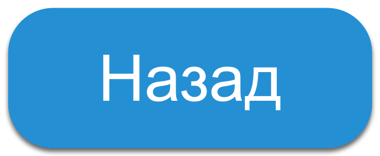

Стихотворения
Роберт Рождественский
Все начинается с любви
Все начинается с любви…
Твердят:
«Вначале
было
слово…»
А я провозглашаю снова:
Все начинается
с любви!
Все начинается с любви:
и озаренье,
и работа,
глаза цветов,
глаза ребенка —
все начинается с любви.
Все начинается с любви,
С любви!
Я это точно знаю.
Все,
даже ненависть —
родная
и вечная
сестра любви.
Человеку надо мало...
Человеку надо мало:
чтоб искал
и находил.
Чтоб имелись для начала
Друг —
один
и враг —
один…
Человеку надо мало:
чтоб тропинка вдаль вела.
Чтоб жила на свете
мама.
Сколько нужно ей —
жила.
Владимир Понкин
Просто устал
Когда диалог кажется бесполезным,
Когда любые слова словно ком или вал,
Это не жизнь падает в бездну,
Это ты просто устал.
Когда сомнения приводят в тупик
И от встреч не становится легче,
Не вини в своих бедах других.
Тебе просто нужно отвлечься.
Увидимся снова
Когда другие станут важнее,
Мы разойдемся, так будет легче
И скроем за прощанием нечто большее,
Чем просто предвкушение встречи.
Нам предстоит в себе раскалывать лёд
И провожать уезжающих, стоя я не рядом,
Ведь в который раз судьба не сведёт,
Полагаясь на жизнь без оглядок.
И в минуту, когда забудем печаль,
Непременно отступит холод.
Прошу, только одно обещай,
Что мы с тобой увидимся снова.
Александр Блок
Две любви
Любви и светлой, и туманной
Равно изведаны пути.
Они равно душе желанны,
Но как согласье в них найти?
Несъединимы, несогласны,
Они равны в добре и зле,
Но первый — безмятежно-ясный,
Второй — в смятеньи и во мгле.
Ты огласи их славой равной,
И равной тайной согласи,
И, раб лукавый, своенравный,
Обоим жертвы приноси!
Но трепещи грядущей кары,
Страшись грозящего перста:
Твои блаженства и пожары —
Всё — прах, всё — тлен, всё — суета.
Мне страшно с Тобой встречаться
Мне страшно с Тобой встречаться.
Страшнее Тебя не встречать.
Я стал всему удивляться,
На всем уловил печать.
По улице ходят тени,
Не пойму — живут, или спят.
Прильнув к церковной ступени,
Боюсь оглянуться назад.
Кладут мне на плечи руки,
Но я не помню имен.
В ушах раздаются звуки
Недавних больших похорон.
А хмурое небо низко —
Покрыло и самый храм.
Я знаю: Ты здесь. Ты близко.
Тебя здесь нет. Ты — там.
